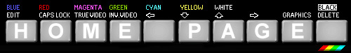

ZX Spectrum Archive
2026 Web 1.0 Reboot Edition!
Welcome to my 2026 reboot of the ZX Spectrum Archive — refreshed, renewed, and updated. The site is best viewed with RetroZilla; the Help section explains why this browser gives the most accurate experience.
A lot has changed in the world of retro computing since I first started this web site back in 2001. Vintage gaming is more popular now than ever, with a steady stream of retro-inspired consoles and re-creations appearing over the years. We had the Bluetooth Spectrum keyboard in 2014, then 'The Spectrum' in 2024 — an emulated 48K recreation by Retro Games Ltd — and now in 2026 the Kickstarter 3 edition of the Spectrum Next from Henrique Olifiers, an FPGA re-imagining of the original hardware that goes far beyond what the original machine could ever do.
When will it end? Who knows. But nostalgia clearly runs deep, and retro gaming has become big business. That’s why I wanted to return to this site and finally finish what I so rudely abandoned in 2003.
The original version was almost complete, but a few CRASH Smash game pages were still missing, and I eventually lost steam with the slow process of gathering and formatting each entry. The last game I added back then was Popeye. In April 2026 I decided not only to finish the job, but to bring the whole site up to date. A lot has changed since 2003. The About section covers the many updates and refinements made for this reboot.
The bookmarks offer a small selection of Spectrum related content, a link to this project on GitHub, and the download page for RetroZilla . Some of these sites may not display correctly with RetroZilla, so you might have to use modern browsers if you want to view them.
I’ve loved the ZX Spectrum — or Speccy as it has become affectionately known over the years — ever since owning my 48K back in the early eighties. My parents bought it for me one Christmas, and I still remember the very first game I played that night. I was banished to the dining room, loaded up Horace Goes Skiing — which came bundled with the machine — and that was it. I became an instant Speccy Addict.
But the story actually starts a little earlier. A year or two before the Spectrum arrived, my parents bought me a ZX81 — again for Christmas — along with a portable black-and-white TV. That was my first real experience with a personal computer. The ZX81 was the older brother of the Spectrum and a hugely popular machine in its own right, available either as a kit or ready-built. The first game I remember playing on it was 3D Monster Maze, which my mum bought for me — with a little gentle persuasion — from a computer shop in Bexhill during a visit to my grandma.
Games of that era were punishingly hard. With so little memory to work with, developers compensated by making them brutally challenging so they’d last longer. And they did last longer, but sometimes they were so frustrating that you simply gave up trying to get past a certain area or boss.
I sold my original Speccy about three or four years after getting it, moving on to other systems once the 16-bit era arrived. My first console was a SEGA Master System. But when I discovered eBay in the early 2000s and realised I could buy a second-hand Spectrum for about £20–£25, I didn’t hesitate. Along with the machine, I started collecting games again. Seeing those loading screens and playing those classics after all those years brought back a flood of fond memories.
And now, here we are in the future, and the way we use our Spectrums has changed dramatically. Waiting patiently two or three minutes for games to load is a thing of the past. With devices like the DivMMC flash interface, you can load games directly into memory in seconds — just like the expensive ROM cartridges that existed back then, except now you can load any game you like.
I often imagine going back in time to my 1980s self, placing one of these devices in my hand along with a tiny SD card, and saying: “This contains every single Spectrum game ever written — and they load instantly.” I wonder how my younger self would have reacted to such sorcery!
 An Introduction to the Spectrum
An Introduction to the Spectrum
By far the most popular and successful of his many products, the ZX Spectrum earned Clive Sinclair a fortune, a knighthood for "services to British industry" and a lasting place in the national consciousness. Huge numbers of Spectrums were sold around the world, making it by some way the most successful British computer ever made. Sinclair's standing rose so high that in 1983 Margaret Thatcher personally presented a Spectrum to the Japanese Prime Minister as a symbol of British technological prowess.
The Spectrum was the longest-lived Sinclair machine, released in seven distinct versions over a six year period. You’ll find information on those models linked below. I haven’t included the many clone systems, but for this 2026 reboot I’ve added sections on the QL and the Spectrum Next. The QL isn’t a Spectrum, of course, but it’s an important part of the wider Sinclair story.
The Spectrum 16K and 48K (1982)
The Sinclair QL (1984)
The Spectrum+ (1984)
The Spectrum 128 (1985)
The Spectrum +2/+2A (1987, 1988)
The Spectrum +3 (1988)
The Spectrum Next (2017)
The +2, +2A and +3 were produced by Amstrad following its 1986 buy-out of Sinclair's computer business. As well as all of these different product versions, no less than thirteen different versions of the basic hardware appeared during the six years that the Spectrum was produced. The 48K board revision and 128K Board revision pages detail these.
The Spectrum continued to sell into the early 1990s, but by about 1992 it had been squeezed out by the more advanced 16-bit computers and the cheap but more capable Sega and Nintendo games consoles.
A licensed clone of the ZX Spectrum, the TS 2068, was launched in the United States by Timex in late 1983. However, the machine's simplicity meant that it was easy to copy and many illegal clones were produced elsewhere in the world. Spectrum clones were produced in many Eastern European and developing countries, including the USSR, Czechoslovakia, Romania, Hong Kong, Argentina and Brazil. Even today, cheap variants of the Spectrum continue to be produced in Russia.
The simple architecture of the Spectrum makes it remarkably easy to emulate. Spectrum emulators exist for almost every modern operating system, as well as smart phones and single-board computers like the Raspberry Pi. Thousands of games and programs have been preserved in emulator-friendly formats such as TZX and TAP.
The last original Spectrum produced was the Amstrad-built +2B, which remained on the production line until 1992, but, the Speccy never had a game-over — it simply carried to the next level! In 2017 the Spectrum Next was released — an enhanced, modern re-imagining of the original ZX Spectrum. It remains fully compatible with classic software, adds major hardware improvements, and features a beautiful case designed by Rick Dickinson, the original Sinclair industrial designer, who sadly passed away in 2018.
The sheer amount of new kit for old tech is vast. There are countless home-brew devices available today: hardware that lets us play games directly from flash storage (DivMMC), adapters that connect our Spectrums to modern HDMI monitors (ZX-HD), and more advanced multi-purpose units that combine several functions into one (SPECTRA+128). There are even devices capable of loading TZX or TAP files into real hardware (MAXDuino), meaning these formats are no longer limited to emulators. It’s incredible how much modern ingenuity has breathed new life into 40-year-old machines.
The spirit of those bedroom coders from the 80s is still going strong as well, with huge teams of hobbyists and indie developers busily typing away and creating new games to this very day. Since the last Spectrum rolled off the production line, hundreds upon hundreds of homebrew titles have been released — everything from tiny arcade blasts to full-on epics.
A Brief History of the Spectrum - A short introduction to the Speccy
The Golden Years - An in depth history from 1981 to 1986
The Life of Clive - The story of the great man himself
Spectrum Computer Reviews - Hardware Reviews from various Magazines